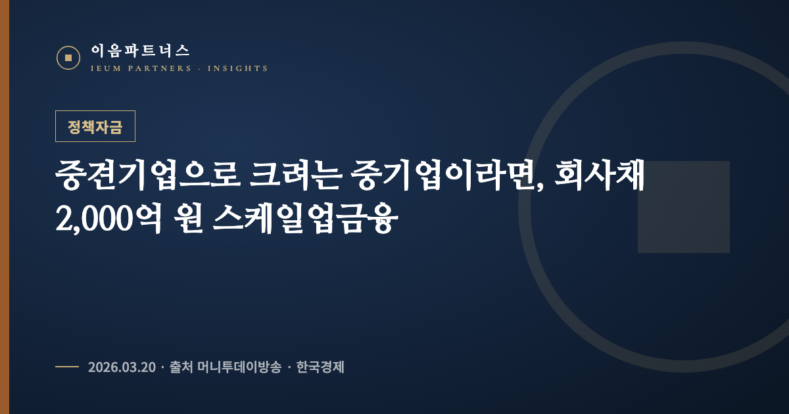

중견기업으로 크려는 중기업이라면, 회사채 2,000억 원 스케일업금융

매출이 꾸준히 늘어 더 큰 투자가 필요한데, 은행 대출 한도는 이미 찼고 회사채는 내 본 적이 없는 중기업이 적지 않습니다. 중소벤처기업부와 중진공은 이런 기업을 위해 ‘스케일업금융’을 운영하며, 2026년에는 약 2,000억 원 규모의 회사채 발행을 지원하기로 하고 4월 3일까지 참여기업을 모집했습니다. 이 글에서는 스케일업금융의 구조와 조건, 다음 기회를 준비하는 방법을 정리합니다.
2026년 모집은 끝났지만, 회사채 신용평가처럼 미리 갖춰야 하는 요건이 있어 앞으로 모집이 다시 열릴 때를 대비한다면 지금부터 살펴보는 것이 좋습니다. 우리 회사가 요건에 가까운지 궁금하다면 카카오톡 채널 이음파트너스에서 함께 확인해 볼 수 있습니다.
스케일업금융은 어떤 구조인가
스케일업금융은 사업성은 좋은데 자체 신용만으로는 회사채 발행이 어려운 중기업이 직접 금융시장에서 자금을 조달하도록 돕는 사업입니다. 민간 자금과 정부 재정을 결합한 자산유동화 방식(P-CBO, 여러 기업의 회사채를 묶어 신용을 보강한 뒤 투자자에게 파는 증권)을 활용해 일반 정책자금보다 큰 자금을 공급합니다. 중진공은 이 사업을 “중기업이 자본시장에서 직접 자금을 조달할 수 있도록 마중물 역할을 하는 사업”이라고 설명했습니다(머니투데이방송).
| 구분 | 내용 |
|---|---|
| 지원 규모 | 2026년 약 2,000억 원 회사채 발행 지원 |
| 기업당 조달 | 최대 120억 원, 최대 5년 만기 |
| 신청 대상 | 중소기업기본법상 중기업 가운데 회사채 신용평가 B+ 이상 |
| 금리·규모 | 신용등급에 따라 차등 적용 |
| 중점 지원 | 혁신성장·초격차·신산업 분야, 도약(Jump-Up) 프로그램 선정기업 등 |
| 2026년 결과 | 유망 중기업 70개사, 2,040억 원 회사채 발행 지원 |
지금까지 어떤 기업이 썼나
중기부와 중진공은 2019년부터 2025년까지 650개사를 선정해 기업당 약 27억 원의 회사채 발행을 지원했고, 이 가운데 25개사는 매출 1,000억 원을 달성했으며 16개사는 기업공개(IPO)에 성공했다고 밝혔습니다. 2026년에는 70개사를 대상으로 2,040억 원 규모의 회사채 발행을 지원했으며, KDB산업은행과 IBK기업은행이 선순위증권 신용보강 기관으로 참여했습니다(한국경제).
신청은 회사가 직접 하고, 지원 여부와 금액은 각 기관 심사로 정해집니다. 기업당 120억 원은 최대치이며, 실제 발행 규모와 금리는 신용등급에 따라 달라집니다.
대표님이 지금 확인할 것
- 우리 회사가 중소기업기본법상 소기업이 아닌 ‘중기업’에 해당하는지
- 회사채 신용평가를 받아 본 적이 있는지, 받는다면 B+ 이상이 가능한 재무 상태인지
- 혁신성장·신산업 분야 해당 여부나 도약(Jump-Up) 프로그램 선정 이력 같은 우대 요소가 있는지
- 5년 만기 자금을 어디에 쓰고 어떻게 갚을지 상환 계획을 세워 두었는지
참고한 자료
- 중기부-중진공, 스케일업금융 참여기업 모집…중기업 2000억 회사채 발행 지원 — 머니투데이방송 (2026.03.22)
- 중진공, 2040억 원 규모 스케일업 금융 발행 — 한국경제 (2026.06.26)
은행 대출 말고 다른 조달 방법을 고민하고 있다면 카카오톡 채널 이음파트너스로 편하게 물어봐 주세요.
※ 이 글은 일반적인 정보 제공을 위한 것으로, 개별 사안은 세무사·노무사 등 전문가와 함께 확인하시기 바랍니다.